Contenido
- Definiciones básicas.
- Suma y sustracción.
- Multiplicación.
- Transposición de matrices.
- Sistemas de ecuaciones lineales.
- Matrices diagonales.
- Vectores sumatorios.
Operaciones matemáticas de los modelos ambientalmente extendidos
Economista / Analista de datos
Descargar el archivo de ejemplo:
Una matriz es un arreglo rectangular de elementos, ordenados en filas y columnas (Miller & Blair, 2022). En insumo-producto, los elementos son números reales: flujos, coeficientes o multiplicadores.
\[ \mathbf{A}_{m \times n} = \begin{bmatrix} a_{11} & a_{12} & \cdots & a_{1n} \\ a_{21} & a_{22} & \cdots & a_{2n} \\ \vdots & \vdots & \ddots & \vdots \\ a_{m1} & a_{m2} & \cdots & a_{mn} \end{bmatrix} = [\, a_{ij} \,] \]
Notación
\[ \mathbf{A}_{m \times n} = \begin{bmatrix} a_{11} & a_{12} & a_{13} \\ a_{21} & a_{22} & a_{23} \end{bmatrix} \qquad \mathbf{M} = \begin{bmatrix} 2 & 1 & 3 \\ 4 & 6 & 12 \end{bmatrix} \]
En Excel
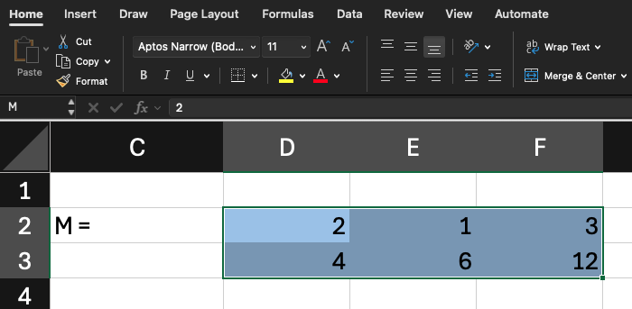
En R
[1] 2 1 3 4 6 12 [,1] [,2] [,3]
[1,] 2 1 3
[2,] 4 6 12Matrices en Excel
Seleccione un rango y asígnele un nombre en el Cuadro de nombres. Para hacer operaciones matriciales, seleccione un rango con las dimensiones del resultado, escriba = seguido de la fórmula y presione CTRL + ENTER. Esto envolverá a la fórmula entre { } como se verá más adelante en la diapositiva de Suma lo cual señalará que se trata de una operación matricial.
Notación
\[ \mathbf{M} = \begin{bmatrix} 2 & 1 & 3 \\ 4 & 6 & 12 \end{bmatrix} \]
\[ m_{23} = 12 \qquad m_{22} = 6 \]
\[ \mathbf{c}' = \begin{bmatrix} 2 & 1 & 3 & 4 & 6 & 12 \end{bmatrix} \qquad c_5 = 6 \]
En Excel
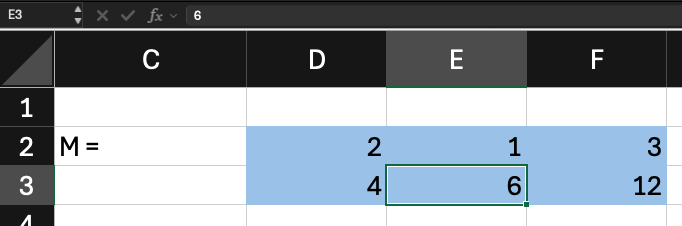
Notación
\[ \mathbf{S} = \mathbf{M} + \mathbf{N}, \quad s_{ij} = m_{ij} + n_{ij} \]
\[ \mathbf{N} = \begin{bmatrix} 1 & 2 & 3 \\ 3 & 2 & 1 \end{bmatrix}, \quad \mathbf{S} = \begin{bmatrix} 3 & 3 & 6 \\ 7 & 8 & 13 \end{bmatrix} \]
En Excel
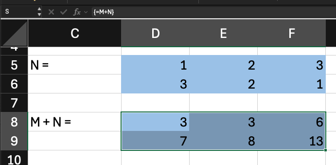
Notación
\[ \mathbf{M}_{2 \times 3} + \mathbf{O}_{2 \times 2} \]
\[ \mathbf{M} = \begin{bmatrix} 2 & 1 & 3 \\ 4 & 6 & 12 \end{bmatrix} \qquad \mathbf{O} = \begin{bmatrix} 2 & 2 \\ 3 & 4 \end{bmatrix} \]
En Excel
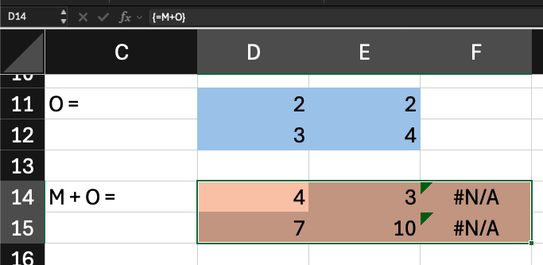
Notación
\[ \mathbf{D} = \mathbf{M} - \mathbf{N}, \quad d_{ij} = m_{ij} - n_{ij} \]
\[ \mathbf{D} = \begin{bmatrix} 1 & -1 & 0 \\ 1 & 4 & 11 \end{bmatrix} \]
En Excel
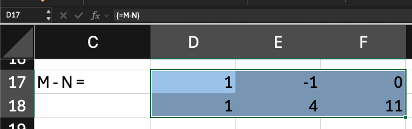
Notación
\[ \mathbf{A} = \mathbf{B} \iff a_{ij} = b_{ij} \ \ \forall \, i, j \]
\[ \text{dim}(\mathbf{A}) = \text{dim}(\mathbf{B}) \]
En Excel
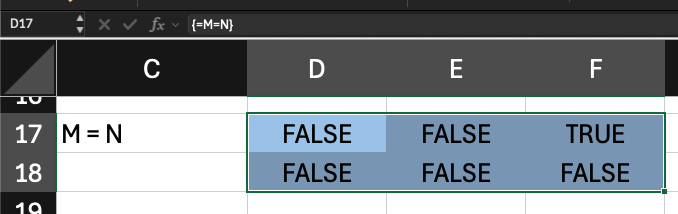
En R
[1] TRUE TRUE [,1] [,2] [,3]
[1,] 2 1 3
[2,] 4 6 12 [,1] [,2] [,3]
[1,] 1 2 3
[2,] 3 2 1 [,1] [,2] [,3]
[1,] FALSE FALSE TRUE
[2,] FALSE FALSE FALSE[1] FALSE [,1] [,2] [,3]
[1,] 2 1 3
[2,] 4 6 12[1] TRUENotación
\[ \mathbf{0} = \begin{bmatrix} 0 & 0 & 0 \\ 0 & 0 & 0 \end{bmatrix} \]
\[ \mathbf{M} + \mathbf{0} = \mathbf{M} \]
En Excel
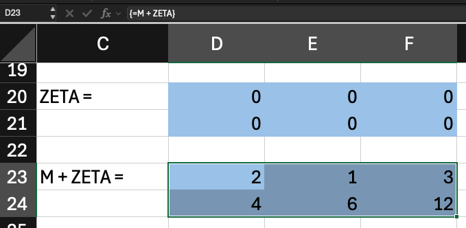
Se multiplica cada elemento de la matriz por el valor único y se coloca el resultado en los mismos lugares de una matriz con las mismas dimensiones a la matriz por la cual se está multiplicando el escalar. Esto es útil, por ejemplo, para multiplicar por un tipo de cambio.
Sean \(\mathbf{M}\) de dimensión \(m \times r\) y \(\mathbf{Q}\) de dimensión \(r \times n\). Las matrices son conformables para la multiplicación cuando el número de columnas de la primera es igual al número de filas de la segunda.
\[ \mathbf{P}_{m \times n} = \mathbf{M}_{m \times r} \, \mathbf{Q}_{r \times n}; \quad p_{ij} = \sum_{k=1}^{r} m_{ik} \, q_{kj} \]
Cada elemento \(p_{ij}\) es la suma de los productos de los elementos de la fila \(i\) de \(\mathbf{M}\) por los elementos de la columna \(j\) de \(\mathbf{Q}\) (Miller & Blair, 2022). La matriz resultante \(\mathbf{P}\) es de dimensión \(m \times n\): tiene el número de filas de \(\mathbf{M}\) y el número de columnas de \(\mathbf{Q}\).
En general, \(\mathbf{M}\mathbf{Q} \neq \mathbf{Q}\mathbf{M}\) , y a veces solo uno de los dos productos está definido.
\[ \begin{bmatrix} 2 & 1 & 3 \\ 4 & 6 & 12 \end{bmatrix} \times \begin{bmatrix} 2 & 0 & 4 \\ 1 & 1 & 2 \\ 3 & 4 & 5 \end{bmatrix} = \begin{bmatrix} 2 \cdot 2 + 1 \cdot 1 + 3 \cdot 3 & 2 \cdot 0 + 1 \cdot 1 + 3 \cdot 4 & 2 \cdot 4 + 1 \cdot 2 + 3 \cdot 5 \\ 4 \cdot 2 + 6 \cdot 1 + 12 \cdot 3 & 4 \cdot 0 + 6 \cdot 1 + 12 \cdot 4 & 4 \cdot 4 + 6 \cdot 2 + 12 \cdot 5 \end{bmatrix} \]
Notación
\[ \mathbf{P}_{m \times n} = \mathbf{M}_{m \times r} \, \mathbf{Q}_{r \times n}; \quad p_{ij} = \sum_{k=1}^{r} m_{ik} \, q_{kj} \]
\[ \mathbf{P} = \begin{bmatrix} 14 & 13 & 25 \\ 50 & 54 & 88 \end{bmatrix} \]
En Excel
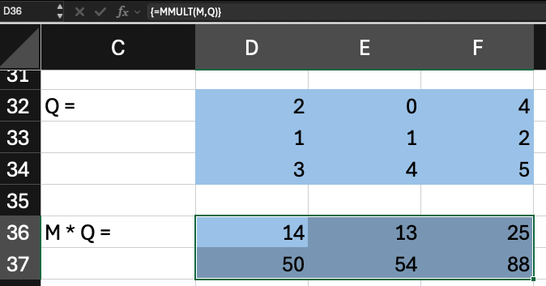
En R
[,1] [,2] [,3]
[1,] 2 0 4
[2,] 1 1 2
[3,] 3 4 5[1] 14 13 25 50 54 88 [,1] [,2] [,3]
[1,] 14 13 25
[2,] 50 54 88Intuitivamente pensamos que una matriz de unos es el equivalente al 1 del álgebra normal, es decir un número por el cual yo puedo multiplicar a otro número y obtener como resultado ese mismo número. Pero esto es incorrecto.
Notación
\[ \mathbf{M} = \begin{bmatrix} 2 & 1 & 3 \\ 4 & 6 & 12 \end{bmatrix} \times \mathbf{J} = \begin{bmatrix} 1 & 1 & 1 \\ 1 & 1 & 1 \\ 1 & 1 & 1 \end{bmatrix} \]
\[ \mathbf{M}\mathbf{J} = \begin{bmatrix} 6 & 6 & 6 \\ 22 & 22 & 22 \end{bmatrix} \neq \mathbf{M} \]
Notación
Una matriz diagonal de unos es la matriz identidad correcta.
\[ \mathbf{I}_3 = \begin{bmatrix} 1 & 0 & 0 \\ 0 & 1 & 0 \\ 0 & 0 & 1 \end{bmatrix} \qquad \mathbf{M}\mathbf{I} = \mathbf{M} \]
En Excel
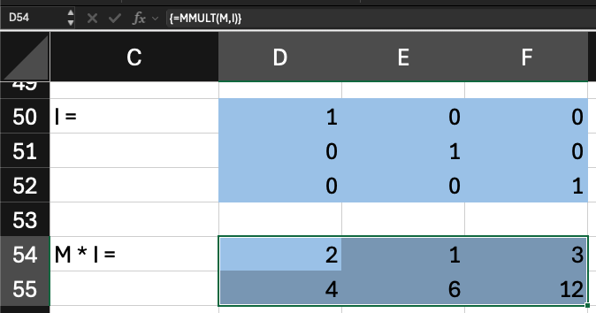
Notación
\[ \mathbf{I}_n: \ \delta_{ij} = \begin{cases} 1 & i = j \\ 0 & i \neq j \end{cases} \]
En Excel
Seleccionar todo el rango y usar =MUNIT().
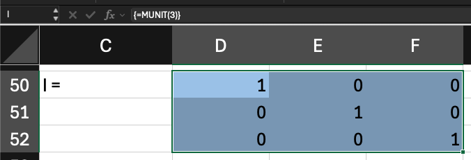
Notación
\[ \mathbf{c}' = \begin{bmatrix} 2 & 1 & 3 & 4 & 6 & 12 \end{bmatrix} \]
\[ (\mathbf{c}')' = \mathbf{c} \]
En Excel
Usar TRANSPONER() o TRANSPOSE())
En R
En R, los vectores no tienen dimensiones. R los conforma como fila o columna al multiplicar, siempre que su largo sea el requerido para la pre o posmultiplicación. Pero se puede forzar al convertirlos en matrices y transponerlas según sea necesario.
Un sistema de \(n\) ecuaciones lineales con \(n\) incógnitas tiene la forma:
\[ \begin{aligned} a_{11}x_1 + a_{12}x_2 + \cdots + a_{1n}x_n &= b_1 \\ &\vdots \\ a_{n1}x_1 + a_{n2}x_2 + \cdots + a_{nn}x_n &= b_n \end{aligned} \]
Se puede representar como \(\mathbf{A}\mathbf{x} = \mathbf{b}\), donde \(\mathbf{A} = [\, a_{ij} \,]\) es la matriz de coeficientes (\(n \times n\)), \(\mathbf{x}\) es el vector de incógnitas (\(n \times 1\)) y \(\mathbf{b}\) es el vector de constantes (\(n \times 1\)).
Por ejemplo:
\[ \begin{aligned} 2x_1 + x_2 &= 10 \\ 5x_1 + 3x_2 &= 26 \end{aligned} \quad \Rightarrow \quad \begin{bmatrix} 2 & 1 \\ 5 & 3 \end{bmatrix}\begin{bmatrix} x_1 \\ x_2 \end{bmatrix} = \begin{bmatrix} 10 \\ 26 \end{bmatrix} \]
Para resolver \(\mathbf{A}\mathbf{x} = \mathbf{b}\), la idea intuitiva es dividir \(\mathbf{b}\) entre \(\mathbf{A}\), como en el álgebra de números:
\[ ax = b \quad \Rightarrow \quad x = \frac{b}{a} = a^{-1}b \]
La división de matrices no está definida. En su lugar se usa la inversa de \(\mathbf{A}\), denotada \(\mathbf{A}^{-1}\), que es la matriz que al multiplicarla por \(\mathbf{A}\) da la matriz identidad \(\mathbf{I}\) (Miller & Blair, 2022):
\[ \mathbf{A}^{-1}\mathbf{A} = \mathbf{A}\mathbf{A}^{-1} = \mathbf{I} \]
La inversa cumple el papel del recíproco de un número, que al multiplicarlo por el número da 1, y la identidad cumple el papel del 1. Al premultiplicar ambos lados de la ecuación por \(\mathbf{A}^{-1}\):
\[ \mathbf{A}^{-1}\mathbf{A}\mathbf{x} = \mathbf{A}^{-1}\mathbf{b} \quad \Rightarrow \quad \mathbf{x} = \mathbf{A}^{-1}\mathbf{b} \]
Dada una matriz \(\mathbf{A}\) de \(n \times n\), se arma una matriz ampliada de \(n \times 2n\) que une a \(\mathbf{A}\) con la identidad \(\mathbf{I}\) de \(n \times n\): \([\, \mathbf{A} \mid \mathbf{I} \,]\). Se trabaja columna por columna, de izquierda a derecha, con tres operaciones permitidas entre filas. Para cada columna, en este orden:
Las tres operaciones son reversibles y no cambian la solución del sistema. Aplicadas a la matriz ampliada convierten \(\mathbf{A}\) en \(\mathbf{I}\), y la \(\mathbf{I}\) original en \(\mathbf{A}^{-1}\). Si en alguna columna no se encuentra un pivote distinto de 0, la matriz no tiene inversa.
Se aplican operaciones entre filas a la matriz ampliada \([\, \mathbf{A} \mid \mathbf{I} \,]\) hasta convertir \(\mathbf{A}\) en \(\mathbf{I}\). Lo que queda a la derecha es \(\mathbf{A}^{-1}\).
Inicio
\[ \left[\begin{array}{cc|cc} 2 & 1 & 1 & 0 \\ 5 & 3 & 0 & 1 \end{array}\right] \]
1. \(F_1 \leftarrow F_1 / 2\)
\[ \left[\begin{array}{cc|cc} 1 & \tfrac{1}{2} & \tfrac{1}{2} & 0 \\ 5 & 3 & 0 & 1 \end{array}\right] \]
2. \(F_2 \leftarrow F_2 - 5F_1\)
\[ \left[\begin{array}{cc|cc} 1 & \tfrac{1}{2} & \tfrac{1}{2} & 0 \\ 0 & \tfrac{1}{2} & -\tfrac{5}{2} & 1 \end{array}\right] \]
3. \(F_2 \leftarrow 2F_2\)
\[ \left[\begin{array}{cc|cc} 1 & \tfrac{1}{2} & \tfrac{1}{2} & 0 \\ 0 & 1 & -5 & 2 \end{array}\right] \]
4. \(F_1 \leftarrow F_1 - \tfrac{1}{2}F_2\)
\[ \left[\begin{array}{cc|cc} 1 & 0 & 3 & -1 \\ 0 & 1 & -5 & 2 \end{array}\right] \]
Resultado y verificación
\[ \mathbf{A}^{-1} = \begin{bmatrix} 3 & -1 \\ -5 & 2 \end{bmatrix}, \quad \mathbf{A}\mathbf{A}^{-1} = \mathbf{I} \]
Notación
\[ \mathbf{C} = \begin{bmatrix} 2 & 6 \\ 4 & 12 \end{bmatrix}, \quad |\mathbf{C}| = 0 \]
\[ \nexists \, \mathbf{C}^{-1} \]
En Excel
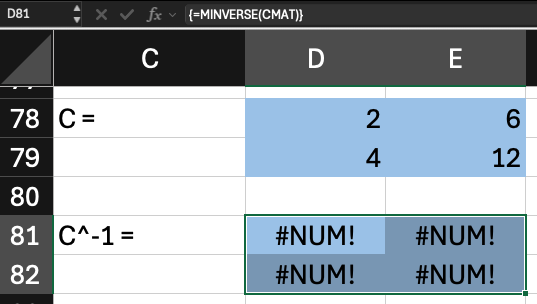
Notación
\[ \mathbf{g}' = \begin{bmatrix} 8 & 9 & 17 \end{bmatrix} \quad \hat{\mathbf{g'}} = \begin{bmatrix} 8 & 0 & 0 \\ 0 & 9 & 0 \\ 0 & 0 & 17 \end{bmatrix} \]
En Excel
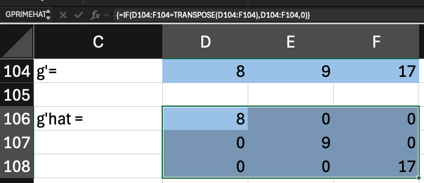
Notación
\[ \hat{\mathbf{G}}^{-1} = \begin{bmatrix} 1/8 & 0 & 0 \\ 0 & 1/9 & 0 \\ 0 & 0 & 1/17 \end{bmatrix} ; \quad \hat{\mathbf{G}}^{-1}\hat{\mathbf{G}} = \mathbf{I} \]
En Excel
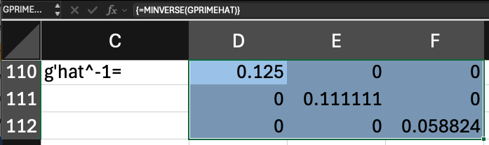
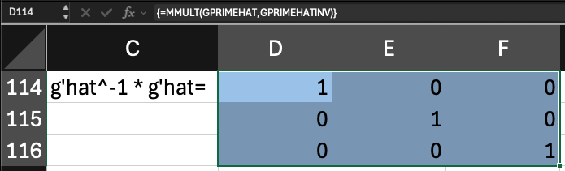
Notación
\[ \mathbf{i} = \begin{bmatrix} 1 \\ 1 \\ 1 \end{bmatrix} \quad \mathbf{M}\mathbf{i} = \begin{bmatrix} 6 \\ 22 \end{bmatrix} \]
En Excel
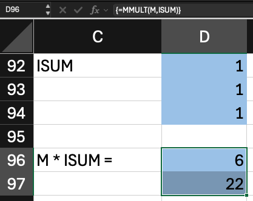
Miller, R. E., & Blair, P. D. (2022). Input-Output Analysis: Foundations and Extensions (3.ª ed.). Cambridge University Press. https://cambridge.org/9781108484763
Álgebra matricial para insumo-producto ambientalmente extendido